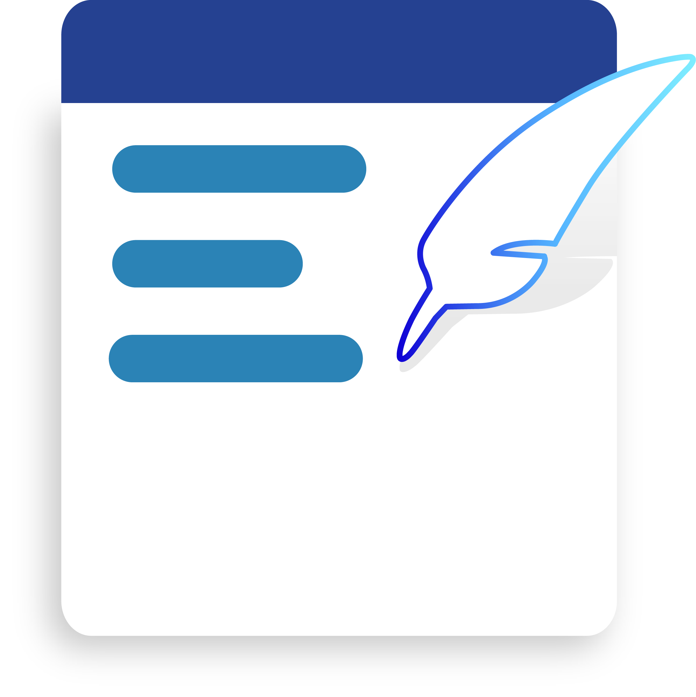

Notas.
Puedes tomar notas y guardarlas en la aplicación.

¿Cómo crear una nueva nota?
Debes clickear el botón flotante de la esquina inferior derecha de la pantalla, aparecerá otra pantalla donde tienes dos campos a completar.
- Título. (opcional si agregas texto a la nota). Nombre con el que puedes identificar la nota.
- Notas: Aquí debes agregar el texto que desas que tenga la nota.
- Guardar: debes presionar este botón para guardar la nota, luego de clickearlo desaparecerá la pantalla de la nota y se creará una nota nueva, ten en cuenta que si no presionas este botón no se creará la nota.
¿Cómo elimino una nota?
Para eliminar una nota deberás mantener presionado un click en la nota que desees eliminar, aparecerá un pequeño diálogo flotante con la opción Eliminar en el, si la clickeas inmediatamente se eliminará la nota.
¿Cómo puedo editar una nota ya creada?
Para editar una nota ya creada previamente bastará con clickearla, aparecerá nuevamente la pantalla de notas con el título y el texto que podrás editar como desees, luego presionando el botón Guardar puedes guardar los cambios, ten en cuenta que si no presionas este botón no se guardarán los cambios realizados a la nota.